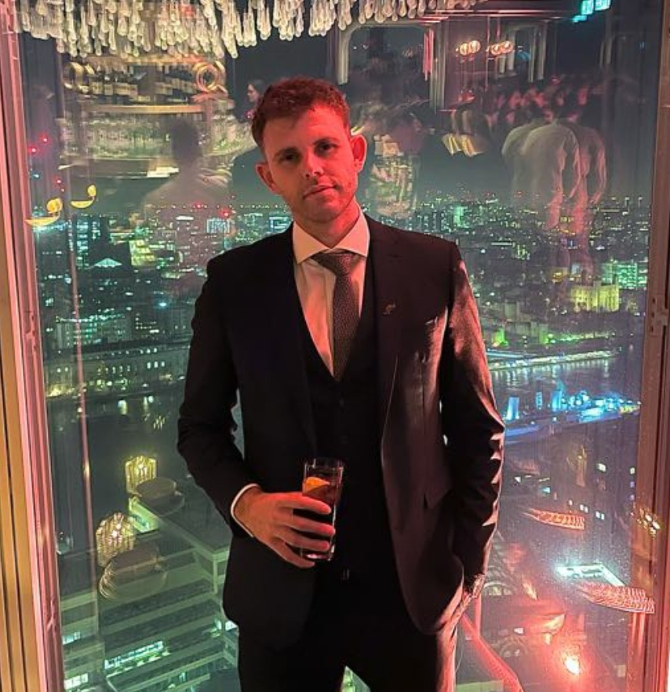

About Me
A graduate with a difference; practical, technical, and experienced
What can I bring to your table?
I am an inquisitive, conscientious, and highly motivated individual with a wealth of experience in technical and supervisory roles. During my years as an electrician, qualified supervisor and small business owner I have developed a unique set of transferable skills that can complement the knowledge I have gained throughout my education at university. Specific skills that I can offer that are hard to find in inexperienced graduates are; demonstrable experience in working within, and leading small teams, a practiced methodical approach to problem solving, and an ability to approach tasks with an appreciation for both client and business interests.
Returning to university as a mature student was a humbling experience, taking me directly from respected expert to complete beginner, and has instilled in me the spirit of being a lifelong learner, always open to further developing my skills. I have always excelled in mathematical subjects and have developed a real passion for coding. During my time studying I have learned a wide range of technologies, supplementing my learning with self-study, with the aim of enabling me to learn new technologies quickly and easily. I always focus on writing clean, well tested, well documented, and reusable code. I believe this approach will allow me to quickly settle into any future role, no matter the specific stack of technologies your company adopts.
Thanks for taking the time to review my bio. Please get in touch if you think I may be a good fit for your company
Technical Skills
Python:
Django:
Java:
SQL:
HTML:
CSS:
Microsoft Office:


Testimonials
All my testimonials are happy to provide references if desired
- Leroy Heritage
- Senior Software Developer
- Ordinance Survey, UK
I have been both a client of Danny when he ran Demarco Electrical and later acted as a mentor as he has transitioned his focus to software development. He is a diligent and reliable professional with a real drive to become a professional developer. A natural problem solver that I think would be a valuable addition to any team.
- 
- Adam Field
- Project Manager
- Ferrovial (HS2), UK
I studied alongside Danny throughout our bachelor degree. He has a real talent for numbers and is a dedicated hard worker in whatever he does. He was running property refurbs alongside an engineering degree and still never missed a deadline. A great team player and loves anything to do with coding.